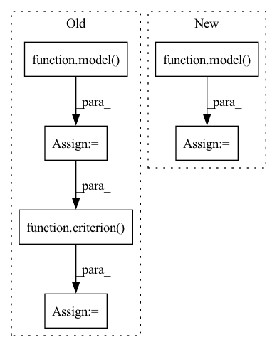

Pattern ID :31935

Before Change
inputs = model.preprocess(batch_data, device)
// scores: B x N x num_classes
scores = model(inputs)
labels = batch_data[1]
scores, labels = self.filter_valid(scores, labels, device)
logp = torch.distributions.utils.probs_to_logits(
scores, is_binary=False)
loss = criterion(logp, labels)
acc = accuracy(scores, labels)
iou = intersection_over_union(scores, labels)
self.valid_losses.append(loss.cpu().item())
After Change
with torch.no_grad():
for idx, inputs in enumerate(tqdm(valid_loader,
desc="validation")):
results = model(inputs["data"])
loss, gt_labels, predict_scores = model.loss(
Loss, results, inputs, device)
acc = Metric.acc(predict_scores, gt_labels)
iou = Metric.iou(predict_scores, gt_labels)
In pattern: SUPERPATTERN
Frequency: 5
Non-data size: 6
Instances
Fragment ID: 93383760
Project Name: isl-org/open3d-ml
Commit Name: 89937ebfc8ba0757f2626e88d4243cc88fd61a84
Time: 2020-08-20
Author: yilingq@umd.edu
File Name: ml3d/torch/pipelines/semantic_segmentation.py
M Class Name: SemanticSegmentation
N Class Name: SemanticSegmentation
M Method Name: run_train(2)
N Method Name: run_train(2)
M Parent Class:
N Parent Class:
M File Name: ml3d/torch/pipelines/semantic_segmentation.py
N File Name: ml3d/torch/pipelines/semantic_segmentation.py
M Start Line: 159
M End Line: 268
N Start Line: 157
N End Line: 258
'>
Before Change
// data[key] = value.to(config.DEVICE)
x = data[0].to(config.DEVICE)
targets = data[1].to(config.DEVICE)
out = model(x)
loss = criterion(out, targets)
_, batch_preds = torch.max(out.data, 1)
fin_loss += loss.item()
fin_preds.append(batch_preds)
return fin_preds, fin_loss / len(data_loader)
After Change
data[key] = value.to(config.DEVICE)
with torch.set_grad_enabled(False):
out = model(**data)
loss = loss_fn(out, data["target"])
// _, batch_preds = torch.max(out.data, 1)
fin_loss += loss.item()
// fin_preds.append(batch_preds)
'>
Fragment ID: 93383767
Project Name: anweshcr7/rhythmnet
Commit Name: 485a27344d5d49d3c66840f0958c84258c6fd7fa
Time: 2021-01-04
Author: anwesh.marwade@beyondsports.nl
File Name: src/engine.py
M Class Name: AnonimousClass
N Class Name: AnonimousClass
M Method Name: eval_fn(3)
N Method Name: eval_fn(3)
M Parent Class:
N Parent Class:
M File Name: src/engine.py
N File Name: src/engine.py
M Start Line: 32
M End Line: 44
N Start Line: 37
N End Line: 45
'>
Before Change
x = data[0].to(config.DEVICE)
targets = data[1].to(config.DEVICE)
optimizer.zero_grad()
out = model(x)
loss = criterion(out, targets)
loss.backward()
optimizer.step()
fin_loss += loss.item()
After Change
optimizer.zero_grad()
with torch.set_grad_enabled(True):
out = model(**data)
loss = loss_fn(out, data["target"])
loss.backward()
optimizer.step()
'>
Fragment ID: 93383755
Project Name: anweshcr7/rhythmnet
Commit Name: 485a27344d5d49d3c66840f0958c84258c6fd7fa
Time: 2021-01-04
Author: anwesh.marwade@beyondsports.nl
File Name: src/engine.py
M Class Name: AnonimousClass
N Class Name: AnonimousClass
M Method Name: train_fn(5)
N Method Name: train_fn(5)
M Parent Class:
N Parent Class:
M File Name: src/engine.py
N File Name: src/engine.py
M Start Line: 11
M End Line: 20
N Start Line: 11
N End Line: 23
'>
Before Change
target = y[:, 1:].contiguous().cuda()
teacher_forcing_rate = scheduler_sampling(epoch)
logits = model(x, ground_truth=y, teacher_forcing_rate=teacher_forcing_rate)
y_hats = torch.max(logits, dim=-1)[1]
//print(label_to_string(target, id2char))
loss = criterion(logits.view(-1, logits.size(-1)), target.view(-1))
total_loss += loss.item()
num_samples += batch_size
After Change
n_samples += inputs.size(0)
preds = model(inputs. input_length, targets)
loss = criterion(preds.view(-1, preds.size(-1)), targets[:,1:].view(-1))
loss.backward()
nn.utils.clip_grad_norm_(model.parameters(), max_norm=max_norm)
'>
Fragment ID: 93383775
Project Name: qute012/kosr
Commit Name: fad0d9ba92dcbd3024650057784c0a484dc1f8e7
Time: 2021-01-28
Author: ejrwls012@gmail.com
File Name: kosr/trainer/trainer.py
M Class Name: AnonimousClass
N Class Name: AnonimousClass
M Method Name: train(6)
N Method Name: train(6)
M Parent Class:
N Parent Class:
M File Name: kosr/trainer/trainer.py
N File Name: kosr/trainer/trainer.py
M Start Line: 26
M End Line: 35
N Start Line: 26
N End Line: 35